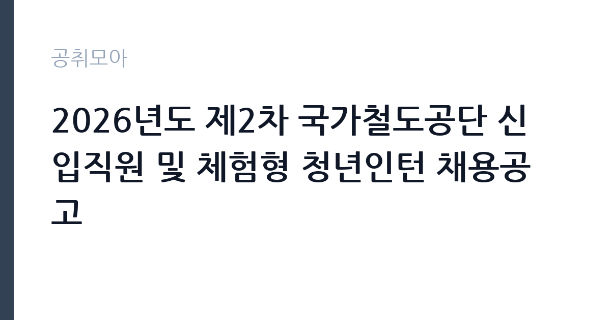

[공공기관] 2026년도 제2차 국가철도공단 신입직원 및 체험형 청년인턴 채용공고
국가철도공단 · 서울 · 마감 2026-10-07 (D-11) · 출처 잡알리오

한눈에 보는 모집 조건
| 기관 | 국가철도공단 |
|---|---|
| 공고명 | 2026년도 제2차 국가철도공단 신입직원 및 체험형 청년인턴 채용공고 |
| 고용형태 | 청년인턴(체험형) |
| 근무지 | 서울 |
| 게시일 | 2026-09-23 |
| 마감일 | 2026-10-07 (D-11) |
지원자격, 이렇게 읽으세요
- 공공기관 채용공시
- 세부 조건은 원문 공고문 확인
전체 모집단위 공통으로 국가공무원법상 결격사유가 없으셔야 하고, 최종합격자 발표 후 공단이 지정한 근무일에 정상근무가 가능하셔야 합니다. 입사유예는 인정되지 않으므로 재학과 재직 여부와 관계없이 임용예정일자에 출근하실 수 있어야 합니다. 남성은 병역의무 불이행 사실이 없어야 하며, 군복무 중이시면 근무시작일 전에 전역하셔야 합니다. 일반직 사무 분야는 지원자격에 제한이 없으며, 토목·건축·전기·통신·기계 분야는 해당 분야 산업기사 이상 자격증을 보유하셔야 합니다. 장애와 보훈, 고졸 분야는 각 관련 법령에 따른 자격이 추가로 요구됩니다. 체험형 청년인턴은 만 18세 이상 만 34세 이하이셔야 하며 학력과 전공에 제한이 없습니다. 공고일 이전에 공단 청년인턴 근무 경력이 있으시면 지원하실 수 없으니 유의하시기 바랍니다.
이 공고의 포인트
이 공고의 강점은 세 가지입니다. 첫째, 신입직원과 청년인턴을 묶은 대규모 채용으로 선택의 폭이 넓다는 점입니다. 둘째, 청년인턴의 근로조건이 원문에 투명하게 공개되어 있다는 점입니다. 월 급여 2,236,300원 세전에 주 40시간 근무, 1개월 개근 시 월 1일의 휴가가 제공됩니다. 셋째, 인턴 수료자에게 정규직 채용 시 혜택이 주어진다는 점입니다. 인턴 기간을 만근하고 교육과 과제, 평가에 성실히 참여하여 수료하시면, 수료일로부터 2년간 정규직 채용에서 서류전형 면제 또는 가산점과 필기전형 가점을 받으실 수 있습니다. 우수인턴으로 선발되시면 서류전형이 면제됩니다. 철도 공기업 입사를 목표로 하시는 분께는 정규직과 인턴을 함께 노려볼 수 있는 구조입니다.
전형은 어떻게 진행되나
신입직원은 1차 서류전형과 2차 필기전형, 3차 면접전형을 거쳐 임용됩니다. 서류전형에서는 자기소개서 평가와 한국사능력, 가점사항에 대한 직무능력 평가가 이루어지며 채용예정인원의 5배수를 선발합니다. 계약직과 체험형 청년인턴은 필기전형 없이 1차 서류전형과 2차 면접전형으로 진행되며, 청년인턴은 모집단위별 채용예정인원의 2배수를 선발합니다. 면접은 국가직무능력표준 기반의 통합면접으로 직무수행능력과 직업기초능력을 평가합니다. 최종합격은 필기 60퍼센트와 면접 40퍼센트를 합산한 고득점자 순으로 결정되며, 청년인턴은 면접 점수로 결정됩니다. 중복지원은 불합격 처리되므로 모집단위와 분야를 하나만 선택하셔야 합니다.
원문에서 확인한 전형 방식
□ 전체 모집단위 공통사항 ㅇ 국가공무원법 제33조 및 [붙임1]의 결격사유가 없는 자 ㅇ 최종합격자 발표 후 공단이 지정한 근무일에 정상근무 가능한 자(입사유예 등 불가) - 정규직의 경우 '26년 12월 말 예정, 체험형 청년인턴의 경우 '27년 1월 초 예정 ㅇ 남성의 경우, 병역법 제76조에서 정한 병역의무 불이행 사실이 없는 자 * 단, 군복무 중인 경우 근무시작일 전에 전역한 자 □ 일반직 ㅇ 위 공통 사항 응시자격을 충족한 자 ㅇ 사무(일반) : 제한 없음 ㅇ 토목, 건축, 전기, 통신, 기계 : 해당분야 산업기사 이상 자격증 보유자 * (해당분야 자격증) [붙임2] 참조 □ 장애 ㅇ 위 공통 사항 응시자격을 충족한 자 ㅇ 장애인 고용촉진 및 직업재활법에 의한 장애인 ㅇ 사무(일반) : 제한 없음 ㅇ 토목, 전기, 기계 : 해당분야 산업기사 이상 자격증 보유자 * (해당분야 자격증) [붙임2] 참조 □ 보훈(사무(일반), 토목, 건축, 전기(전철전력)) ㅇ 위 공통 사항 응시자격을 충족한 자 ㅇ 국가보훈부 추천을 받은 자 - 국가유공자 등 예우 및 지원에 관한 법률 등 보훈관계법률에 의한 취업지원대상
이런 분께 추천해요
- 토목·건축·전기·통신·기계 전공자로 산업기사 이상 자격증을 보유하신 분께 적합합니다. 기술 분야 지원자격의 핵심이 자격증이기 때문입니다.
- 만 34세 이하로 철도 공기업 경험을 쌓고자 하시는 분께 청년인턴이 적합합니다. 수료 시 정규직 채용 가산 혜택이 주어지기 때문입니다.
- 국가유공자와 장애인, 고졸 예정자로 사회형평 전형을 찾으시는 분께 적합합니다. 분야별 별도 모집단위가 마련되어 있기 때문입니다.
지원 전 체크리스트
- 지원하시는 분야의 자격증 요건을 충족하십니까. 기술 분야는 산업기사 이상 자격증이 필수입니다.
- 청년인턴 지원자는 만 18세 이상 만 34세 이하 연령과 공단 인턴 경력 없음 요건을 확인하셨습니까.
- 임용예정일자인 신입 2026년 12월 말과 인턴 2027년 1월 초에 정상출근이 가능하십니까. 입사유예는 인정되지 않습니다.
- 중복지원 시 불합격 처리되므로 모집단위와 분야를 하나로 정하셨습니까. 숙소는 별도 제공되지 않으므로 근무 소재지도 고려하십시오.
모집 일정과 제출 타이밍
지원서 접수는 2026년 9월 30일 오전 9시부터 10월 7일 오후 6시까지이며, 접수 시작일이 추석 연휴 직후이므로 미리 서류를 준비해 두시기 바랍니다. 이후 서류전형 합격자 발표와 면접전형을 거쳐 신입직원은 2026년 12월 말, 청년인턴은 2027년 1월 초에 임용될 예정입니다. 자기소개서 평가가 서류전형의 핵심이므로 접수 기간 초반에 제출하신 뒤에는 면접 준비에 집중하시기를 권합니다. 모집단위별 임용일정이 상이하므로 본인이 지원하시는 분야의 일정을 원문 공고문에서 확인하시기 바랍니다.
직무 이해하기: 공공기관
국가철도공단은 철도시설의 건설과 관리를 담당하는 국토교통부 산하 공기업으로, 본사는 대전광역시에 있습니다. 고속철도와 일반철도, 광역철도 노선의 건설 사업을 발주·관리하고 수도권광역급행철도 사업을 수행하고 있습니다. 사무 분야는 사업 기획과 행정 실무를, 토목·건축·전기·통신·기계 분야는 철도 건설 현장의 설계 검토와 시공 관리, 시설 유지보수 업무를 담당하시게 됩니다. 청년인턴은 배정 부서의 업무 지원과 과제 수행을 맡으시며 6개월간 현업을 경험하시게 됩니다. 근무지는 본사와 수도권·영남·호남·충청·강원 본부로 나뉘며 공단 사정에 따라 변경될 수 있습니다.
자기소개서 작성 팁
자기소개서는 서류전형의 핵심 평가 자료이므로 직무와 연결된 경험을 중심으로 작성하시기 바랍니다. 기술 분야는 자격증 취득 과정과 실습, 프로젝트 경험을 구체적으로 서술하시고, 사무 분야는 행정 실무나 분석 경험을 중심으로 쓰시면 됩니다. 철도 건설과 안전에 대한 관심을 본인의 경험과 연결하여 보여주시면 좋습니다. 청년인턴 지원자는 인턴 기간에 수행하고 싶은 과제와 이를 통해 얻고자 하는 역량을 분명히 제시하시기 바랍니다. 한국사능력 등 가점 요소도 서류 평가에 반영되므로 해당 자격이 있으시면 빠짐없이 기재하십시오.
면접 준비 포인트
면접은 국가직무능력표준 기반의 통합면접으로 직무수행능력과 직업기초능력을 평가합니다. 기술 분야는 해당 직렬의 필요지식과 기술, 태도에 대한 질문이 나오므로 직무기술서를 기준으로 기본 개념을 정리해 두시기 바랍니다. 사무 분야는 사업 이해도와 행정 실무 역량을 중심으로 평가됩니다. 적응력과 자기개발능력, 문제해결능력이 공통 평가 항목이므로 관련 경험을 미리 정리해 두시는 편이 좋습니다. 청년인턴 면접도 동일한 통합면접으로 진행되며, 인턴으로서의 성실성과 학습 의지를 보여주시는 것이 중요합니다.
급여·근무조건 읽는 법
청년인턴의 근로조건은 원문에 명시되어 있습니다. 월 급여는 세전 2,236,300원으로 2027년 적용 최저임금 고시 기준이며, 4대 보험 본인 부담금이 포함된 금액입니다. 계약기간은 2027년 1월 초 임용일부터 6개월간이고 주 40시간, 일 8시간 근무입니다. 신입직원의 보수 조건은 원문 공고문에서 확인하셔야 하며, 이 글에서 확정 수치를 단정하지 않습니다. 공단 본사는 대전광역시에 있으므로 타 지역 거주자는 주거 비용을 고려하셔야 합니다. 숙소는 별도 제공되지 않는다고 공고문에 안내되어 있습니다.
자주 묻는 질문
- 청년인턴 수료 혜택이 정확히 무엇입니까.
인턴 기간을 만근하고 교육 수강과 과제, 평가에 성실히 참여하여 수료하시면 수료일로부터 2년간 정규직 채용에서 혜택을 받으십니다. 우수인턴은 서류전형 면제 또는 5퍼센트 가산점과 필기 2퍼센트 가점이, 일반 수료자는 서류 5퍼센트와 필기 2퍼센트 가점이 부여됩니다. - 신입직원과 청년인턴에 동시 지원할 수 있습니까.
지원하실 수 없습니다. 본 채용공고 내 채용전형과 모집단위별 중복지원은 불가하며 중복지원 시 불합격 처리됩니다. 하나를 선택하셔야 합니다. - 근무지역을 선택할 수 있습니까.
청년인턴은 본사와 수도권·영남·호남·충청·강원 본부 등 모집단위별로 선발하며 해당 지역 근무가 원칙입니다. 거주지와 상관없이 지원하실 수 있으나 숙소가 제공되지 않으므로 근무 소재지를 고려하여 지원하시기 바랍니다.
함께 보면 좋은 공고
[공공기관] [속리산] 속리산국립공원사무소 기간제(탐방해설) 직원 채용 재공고 — 마감 2026-10-08[공공기관] 발전공기업 통합실무지원단장 채용공고 — 마감 2026-10-08[공공기관] [설악산] 설악산국립공원 기간제 직원[환경관리(한시인력)] 채용 공고 — 마감 2026-10-01출처: 잡알리오 공개정보를 바탕으로 공취모아가 정리한 안내글입니다. 모집 조건·일정은 변경될 수 있으니 지원 전 반드시 원문 공고문을 확인하세요. 본 글은 정보 제공용이며 합격을 보장하지 않습니다.